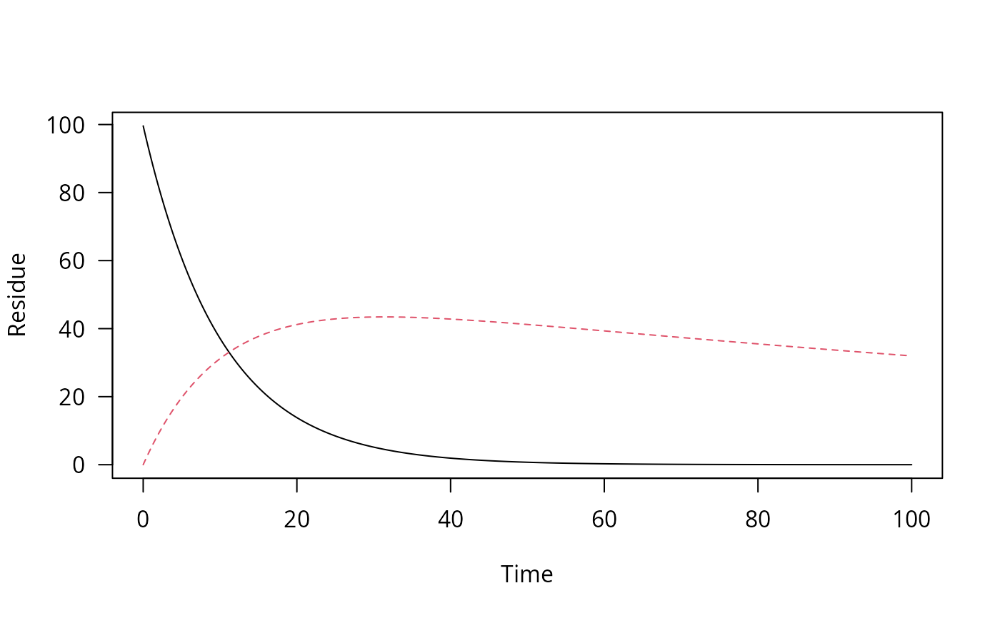
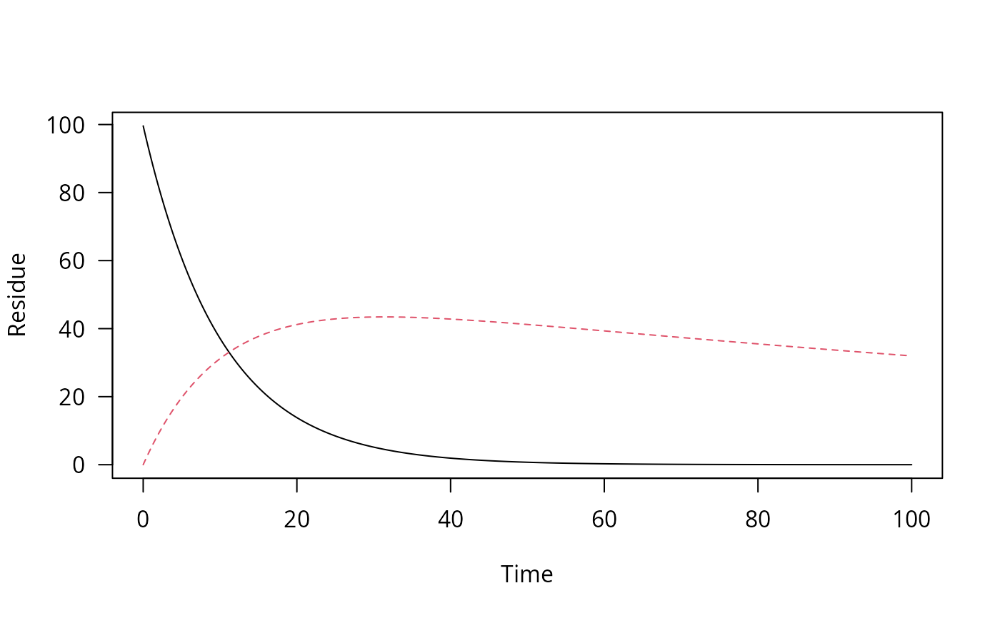

Create a time series of decline data
Usage
one_box(x, ini, ..., t_end = 100, res = 0.01)
# S3 method for class 'numeric'
one_box(x, ini = 1, ..., t_end = 100, res = 0.01)
# S3 method for class 'character'
one_box(x, ini = 1, parms, ..., t_end = 100, res = 0.01)
# S3 method for class 'mkinfit'
one_box(x, ini = "model", ..., t_end = 100, res = 0.01)Arguments
- x
When numeric, this is the half-life to be used for an exponential decline. When a character string specifying a parent decline model is given e.g.
FOMC,parmsmust contain the corresponding parameters. If x is anmkinfitobject, the decline is calculated from this object.- ini
The initial amount. If x is an
mkinfitobject, and ini is 'model', the fitted initial concentrations are used. Otherwise, ini must be numeric. If it has length one, it is used for the parent and initial values of metabolites are zero, otherwise, it must give values for all observed variables.- ...
Further arguments passed to methods
- t_end
End of the time series
- res
Resolution of the time series
- parms
A named numeric vector containing the model parameters
Value
An object of class one_box, inheriting from ts.
Examples
# Only use a half-life
pred_0 <- one_box(10)
plot(pred_0)
 # Use a fitted mkinfit model
require(mkin)
fit <- mkinfit("FOMC", FOCUS_2006_C, quiet = TRUE)
pred_1 <- one_box(fit)
plot(pred_1)
# Use a fitted mkinfit model
require(mkin)
fit <- mkinfit("FOMC", FOCUS_2006_C, quiet = TRUE)
pred_1 <- one_box(fit)
plot(pred_1)
 # Use a model with more than one observed variable
m_2 <- mkinmod(parent = mkinsub("SFO", "m1"), m1 = mkinsub("SFO"))
#> Temporary DLL for differentials generated and loaded
fit_2 <- mkinfit(m_2, FOCUS_2006_D, quiet = TRUE)
#> Warning: Observations with value of zero were removed from the data
pred_2 <- one_box(fit_2, ini = "model")
plot(pred_2)

# Use a model with more than one observed variable
m_2 <- mkinmod(parent = mkinsub("SFO", "m1"), m1 = mkinsub("SFO"))
#> Temporary DLL for differentials generated and loaded
fit_2 <- mkinfit(m_2, FOCUS_2006_D, quiet = TRUE)
#> Warning: Observations with value of zero were removed from the data
pred_2 <- one_box(fit_2, ini = "model")
plot(pred_2)
